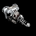
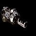
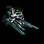
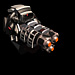
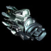
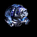
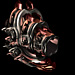
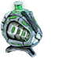

|
Weapon types
You can buy weapon in any equipment
store and mount it on your ship. Each weapon type has its own operation
principle. Besides there are many modifications, which differ in size,
rate of fire, radius and power of damage. Some weapon types are more suitable
for tactical battles in the common space,
others for arcade battles in the hyper-space.
 |
Damage: low
Kill range: medium
Mode of operation: energy
In space: ray of blue light
In hyper: poorly guided missiles, medium range
The main purpose of the industry laser are works related to the deep-drilling,
extraction of minerals and rock breaking. The basis of the technology make the concentration
of the light ray on a small area. To increase the power of the ray, the length of the light wave
is decreased with the help of the gravitation fields. Thanks to it the industrial lasers
can drill or even cut even a small asteroid.
 The most efficient weapon for shooting at asteroids, as after a shot a large store of minerals remains. The most efficient weapon for shooting at asteroids, as after a shot a large store of minerals remains.
|
 |
Damage: medium, low damage spreading
Kill range: low
Mode of operation: splinter
In space: several bursts of yellowish color
In hyper: clots of energy of light blue color, medium range
A plasma gun with reinforced lethal characteristics.
When approaching to a target the plasma clot experiences the influence of chaotic gravitation fields,
which divide it into hundreds of small parts, which hit the target not with a spot hit, but with a series of small explosions.
|
 |
Damage: medium, high damage spread
Kill range: large
Mode of operation: energy
In space: blue light ray
In hyper: green balls with notches, unlimited range
The source of the steamrolling power of lezka is the nonlinear generator of impulses.
The charge is delivered to the accumulation block of each barrel and a strong directed outburst of energy happens as soon as the sufficient amount of energy is accumulated.
The diffusive effect determines that the range of fire is low.
|
 |
Damage: below average
Kill range: huge
Mode of operation: missile
In space: ship launches 3 self-guided missiles
In hyper: at a shot a cartridge dissolves into three parts, it has auto-aiming; high range
Three-barrelled missile weapon. The missiles are equipped with a balanced system of automatic target pursuing.
The upgraded intellectual block makes useless the anti-missile maneuvers and enemy's camouflage.
The only disadvantage is that the enemy can destroy the missiles with a standard gun while approaching the target.
The missile-thrower allows to carry on the hostilities at a large distance from the enemy on a ship with poor defense.
|
 |
Damage: low, slows down the target movement, fills the hull structure of the attacker proportionally to the inflicted damage
Kill range: large
Mode of operation: energy
In space: a yellow ray
In hyper: scatters cartridges in a half-circle, enemy slows down when hit, low range
This weapon uses the principle of the compulsory retraction, or retardation, in no-friction conditions. The generator of the guided G-fields, the so-called treton, reacts against the driving power, decreasing the kinetic power of a ship, i.e. slows it down. Thanks to the acryn technologies, scientists discovered an additional effect in this weapon, an opportunity of making repairs. Repairing of a shooting ship are naturally done with the help of G-fields and at the expenses of the target.
|
 |
Damage: above average, low damage spread
Kill range: low
Mode of operation: energy
In space: electric charge of light-yellow color
In hyper: a ray made of small white balls, low range
The technology of the wave phaser, which has been used for the first time by the Ancient ones, has been considered to be lost for the period of many years, until Ridiger Keller introduced significant improvements into it.
As a result it triggered a new era of phaser use for military purposes. This is the sixth variation of the device, it is more powerful than previous models thanks to a wave modulator, which helps the phaser to deliver chain damage to three enemies at once.
|
 |
Damage: above average, high damage spread
Kill range: large
Mode of operation: splinter
In space: two cartridges, which fly at the target in a small bow
In hyper: self-guided missiles of blue color, chase the target, high range
Originally the device was used for destruction of asteroids and large meteorites.
But the war against dominators called made to create a combat variant of the flow blaster - all-powerful frag weapon.
Thousands of small frag cartridges accelerate in vacuum up to superspeeds with the help of magnetic fields,
and, literally pierce through a target, shot in a single flow and explode inside it.
|
 |
Damage: low, destroys the equipment of an enemy ship
Kill range: above average
Mode of operation: energy
In space: short waves
In hyper: when shot dissolves in a cloud, damaging everything in a sector
The electronic stuff inside each ship is its soft spot.
The cutter affects exactly the electronics.
The guided electromagnetic impulse destroys the electronics of the ship equipment,
damaging the logical circuits and introducing the considerable interference into the work of the automatic systems.
Exposed are mostly electronic devices, which have regular microarray structures.
|
 |
Damage: large, high damage spread
Kill range: medium
Mode of operation: splinter
In space: orange ball
In hyper: a large green cartridge, which spreads out a spinning chain
The resonance is one of the most dangerous physical phenomena, and indeed it was used for the
development of a lethal weapon - multi-resonator. Vibrocharge ejected by the gun gets attached to a target.
A powerful computing unit determines the resonance frequency and makes the charge vibrate.
As soon as the oscillation frequency coincides with the target's frequency a powerful blow happens.
The inside of the vibrocharge are gravitation mines, which fly around damaging the nearby objects with mass.
Effective weapon against large gatherings of enemies.
|
 |
Damage: large
Kill range: medium
Mode of operation: energy
In space: an energetic sphere of yellow color wraps the target
In hyper: a ray of yellow color, which travels in a small bow
One of the heaviest weapons due to its massive generator of the antimatter.
The distinguishing feature of the antimatter - structure instability - has been applied in the warfare as well.
As soon as the discharged antimatter contacts the target, the structure of the antimatter gets damaged
accompanied by an emission of enormous volume of energy.
The energy field resulted from the chain reaction strikes the surrounding objects with mass.
|
 |
Damage: large
Kill range: large
Mode of operation: energy
In space: a thread of yellow color
In hyper: violet and red ray, flying straight forward, at a long distance
Originally designed for mine works this device grew to be one of the uncompromising and fierce weapons of destruction.
Its principle of operation is based on the destruction of the molecular bindings.
The G-destabilizer diminishes the intramolecular forces,
and a powerful energy blow ultimately destroys the bindings turning the antimatter into atomic powder.
|
 |
Damage: large
Kill range: medium
Mode of operation: energy
In space: a thread of yellow color
In hyper: two missiles are circling around a ship, killing the enemies; low range
In space G-oscillations created by the black holes and adjacent inertial fields,
are accompanied by powerful energy outbursts - the so-called gravirs.
The best weapons forgers has put a bridle on this physical phenomenon and learned to cause it on purpose.
Quite a large energy weapon, it is mountable on your ship, just pray to have enough space for it.
|
 |
Damage: large
Kill range: medium
Mode of operation: splinter
In space: orange waves
In hyper: three dark yellow balls, flying apart fan-wise, low range
This is a development of Terron dominators, the so-called Emitter of Molecular Chaotic Deviations,
with the speed 9000 deviations per stroke. The high speed is achieved thanks to the effect of mutual reinforcement,
determined by the application of five stamped radiation tubes.
Highly-precise weapon, however the low penetrating power results in low level of damage inflicted.
Effective weapon against large gatherings of enemies.
|
 |
Damage: large, high damage spread
Kill range: above average
Mode of operation: energy
In space: wave flying apart from the ship in all directions
In hyper: cartridges flying apart from the ship in all directions, high range
The special weapon of Keller dominators with a unique principle of operation.
It is mounted on the external part of the hull and causes the distortion of the space environment when activated,
as if during a hyper-jump.
The effect of undular interspace collapse resulted from a powerful energy source,
which uses the antimatter.
The most effective weapon against a large gathering of enemies.
|
 |
Damage: large
Kill range: huge
Mode of operation: missile
In space: a single self-guided torpedo
In hyper: several bright yellow balls slowly moving into enemy's direction
Powerful weapon. Torpedo apparatus is in fact a missile-launcher modernized by Blazer, and additionally upgraded by him. Uses self-guided frag torpedos of AP-2 SPLASH type equipped with gravitational destabilizer of the matter, which provide that not only the target gets damaged, but additionally the nearby ships.
Similar to the missile-launcher it allows to fight at a large distance from the enemy on a ship with poor defense.
|
 |
Damage: large
Kill range: below average
Mode of operation: splinter
In space: green 'spit'
In hyper: a clot of green substance with a tail
On the very verge of war against the dominators the Coalition designers created
a new generation of nano-robots capable of working in extreme conditions
and at the same time suitable for maintenance in ordinary service centers. By
chance this development found application only
in a single specimen for the serial manufacture, however later it has been stolen by pirates. With the help
of a super-conductive accelerator Esodafer shoots out a clot of nano-robots, which deliver
damage to the hull cover of the enemy ships. The robots are able to change its structure, which
results in a reduced damage of the hull armor. However from he point of view of safety reasons
the operation time and the efficiency of the activated nuneats
are limited.
The distinctive feature of the gun is that it can temporarily reduce enemy's armor index. If the structure of enemy's ship is below 1000, the effect of armor reduction is guaranteed, sometimes even by 2. The larger is the ship's structure, the lower is the chance to reduce its armor.
|
 |
Damage: medium, high damage spread
Kill range: above average
Mode of operation: energy
In space: lightnings between the shooter and the target
In hyper: two ball lightnings
The period of dominator wars grew to become the time of renascence of many ideas,
which shortly seemed to be the relics of the past. After the laser and
phaser weapon the turn came to for the ion and plasma systems. The acryn
element base has drastically increased the efficiency of the cooling loop,
and provided for a gradual growth of Cafasitor's power during continuous
firing and the inflicted damage to quite high rates.
As soon as the field tests of this system come to an end, the acryn cooling system will surely
be applied in other types
of pirate weapons.
This weapon type is unsuitable for a continuous fight, as the longer lasts an attack, the more powerful is the weapon. In addition the enemy can be ionized after a sharp shot, which would lead to further damage, even if nobody shoot at it. The resistance to this effect can be provided with the help of the artifact "Iron zoopie".
|
 |
Damage: low
Kill range: large
Mode of operation: missile
In space: five miniature warheads
In hyper: blue ball circling around the ship
Lirecron is the only type of the missile weapon,
which utilizes the acryn solutions. It is provided with the weapons with wide
application of acryn elements and produces salvoes at the rate higher
than any known types of the missile armament of the space-to-space class.
At the explosion the missiles of Lirecron generate a powerful electromagnetic
field, which overcomes the creening of the series equipment of the Coalition,
dominators and pirates. Owing to it the equipment
of the ships exposed to the fire of electromagnetic missiles operates intermittently.
Similar to the missile launcher, it allows to conduct warfare at a long distance from the enemy on a ship with a poor defense, simultaneously disarming the enemy, namely lowering the range of its fire, the radar raduis, power of the defense shield or scanner. It should be kept in mind that this effect depends on the damage, inflicted by the missiles, i.e. the higher is the damage, the bigger is the chance to do the enemy a lot of harm.
| |